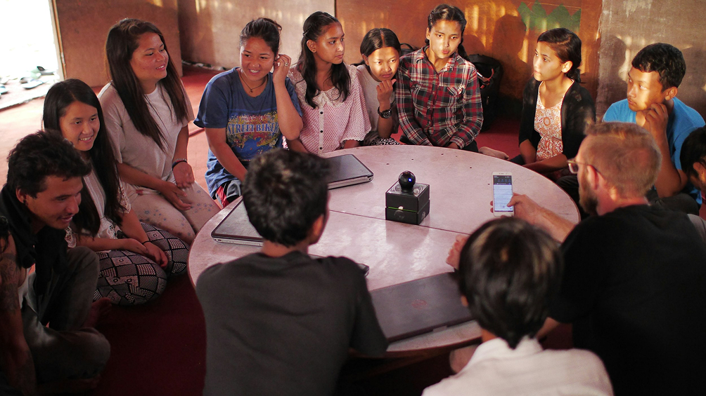

At Africare, we believe that strong communities are the foundation of sustainable progress. Our work is rooted in empowering local communities across Africa to identify challenges, develop solutions, and drive lasting change. We collaborate with community leaders, families, and partners to create programs that address critical needs such as access to healthcare, clean water, and economic opportunities. By focusing on inclusivity and participation, we ensure that every voice is heard and every individual has a role in building a brighter future. From supporting small businesses to organizing community-led initiatives, Africare prioritizes fostering self-reliance and resilience. Together, we are creating connected, thriving communities that are equipped to face today’s challenges and seize tomorrow’s opportunities.By focusing on inclusivity and participation, we ensure that every voice is heard and every individual has a role in building a brighter future. From supporting small businesses to organizing community-led initiatives, Africare prioritizes fostering self-reliance and resilience. Together, we are creating connected, thriving communities that are equipped to face today’s challenges and seize tomorrow’s opportunities.
Community
